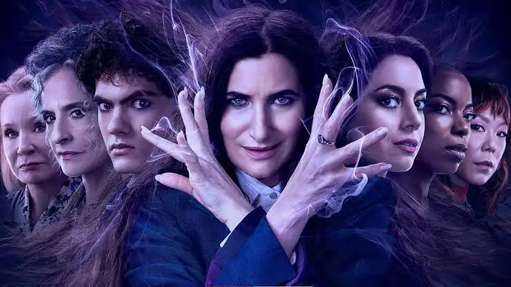

Rick and Morty

A sci-fi animated series following a genius scientist and his easily influenced grandson across the multiverse. Expect chaos, philosophy, and dark humor.
📺 Rick and Morty - Season Guide
Season 1
The show kicks off with wacky adventures as Rick drags Morty into dimension-hopping chaos. Highlights include the pilot and "Rick Potion #9".
Season 2
More dark and mind-bending escapades. Standout episodes include "Total Rickall" and "The Ricks Must Be Crazy".
Season 3
Starts with a bang in "The Rickshank Rickdemption". The season dives deeper into Rick’s backstory and themes of nihilism.
Season 4
Continues with sharp humor and episodes like "Rattlestar Ricklactica". Builds on the growing complexities of each character.
Season 5
Rick battles himself (literally), and the season toys with meta-humor. “Mortyplicity†and “Rickternal Friendshine of the Spotless Mort†shine.
Season 6
High-stakes drama meets philosophical exploration. Evil Morty reappears, and things get very real in "Night Family".
Season 7
The shift in voice cast doesn’t slow the momentum. Strong character development with episodes like “Wet Kuat Amortycan Summer.”
Season 8
Season 8 brings new timelines, alternate realities, and ties up long-running plots. It’s cerebral, emotional, and very Rick.
🦑 Squid Game (TV Series)


Overview: A deadly competition where 456 players battle it out in twisted children's games for a huge cash prize — with fatal consequences. It blends social commentary, psychological thrills, and sharp visuals.
Season 1: Introduced the shocking concept, intense mind games, and unforgettable characters like Gi-hun, Sang-woo, and the Front Man. The Red Light-Green Light scene became iconic.
Season 2: Continues Gi-hun’s quest for justice. Expect deeper mysteries, new games, and more about the organization behind the deadly tournament.
Rating: ââââ (4/5)
Read Full Review on IMDb🧙 Agatha All Along (TV Series)
Review: Visually stylish but underwhelming. Lacked depth, weak character moments, and failed to deliver on its potential. A spin-off that didn’t quite cast a spell on me.
Rating: ââ★☆☆ (3/10)
Read Full Review on IMDb